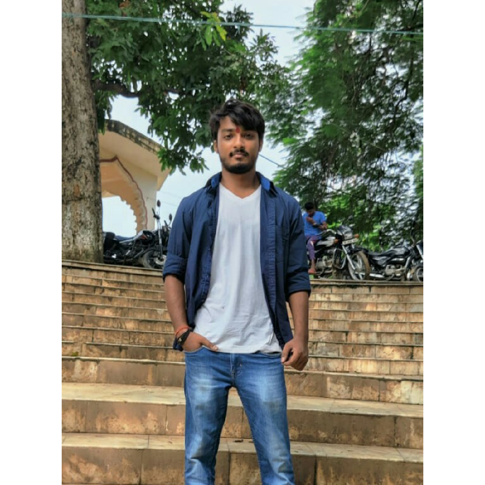

|  | Ashwini KumarStudent at Birla insitute of technology, Mesra. Welcome to BIT MesraPursuing B-tech in Computer Science EngineeringRoll: BTECH/60007/21 Live in- Jamshedpur, JharkhandI am a Front-end Developer. I love to watch Anime
|
Education
My Hobbies
| JAVA | ★★★ |
| HTML | ★★★★★ |
The Vampire Diaries is an American supernatural teen drama television series developed by Kevin Williamson and Julie Plec, based on the book series of the same name written by L. J. Smith. The series premiered on The CW on September 10, 2009, and concluded on March 10, 2017, having aired 171 episodes over eight seasons.
Elena Gilbert is a fictional character and protagonist from the novel series The Vampire Diaries. In the television series adaptation, set in the fictional town of Mystic Falls, she is portrayed by Nina Dobrev. In the books, Elena was blonde, popular, selfish and a "mean girl".
Stefan Salvatore is a fictional character and one of the two main protagonists from L. J. Smith's novel series The Vampire Diaries. He is portrayed by Paul Wesley in the television series CW's The Vampire Diaries and The Originals.He is a Vmpire.
Damon Salvatore is a fictional character In L. J. Smith's novel series The Vampire Diaries. He is portrayed by Ian Somerhalder in the television series. Damon is the one of the main protagonist along with Stefan Salvatore, especially in the story's main setting, Mystic Falls.
He was a former main character, antagonist/anti-hero of The Vampire Diaries. Klaus was an Original vampire and a werewolf, making him the Original Hybrid. He is the most powerful among all.